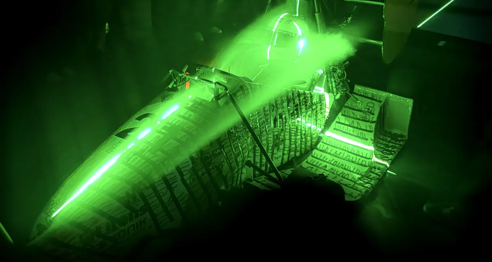

Education
University of WaterlooWaterloo, ON
Bachelor of Mechanical Engineering, Honours, currently 2B
Mechanical EngineeringUniversity of Waterloo
Hello World! This is my project launch center!, I am a Mechanical Engineering Student @UWaterloo and I am always happy to connect. I am currently looking for opportunities to work starting January!

Click on a card to read more!
Read it here, or take the PDF
Bachelor of Mechanical Engineering, Honours, currently 2B
Where I have worked
Open a row for the abstract
UW Formula Electric
I am looking for opportunities starting January, and I am always happy to connect. Feel free to reach out with any questions.